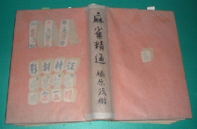

Book review 書壇。
（１２）麻雀古書 その２
「その１」でＡグループ（大正中期〜昭和18年）のエポックメーキングな本を紹介したので、その２では同じAグループから麻雀学必須の４冊を紹介する。どれもこれも「読んでからモノ云え」と云いたくなるような素晴らしい書籍ばかり。
まず下図は、林 茂光（りんもこう）著の「麻雀競技法とその秘訣」（四六書院・S4.12.12）。林 茂光（りんもこう）は雀名で、本名は鈴木郭郎（すずきひろお）。これを中国語読みすると「リン モコウ」、そこでこれを音で林 茂光（りんもこう）に当てはめて雀名とした。
＃むかし林 茂光の本を調べようと思って国会図書館まで出かけた。ところが幾ら調べても一冊もない！。（ほんなアホな、林 茂光の本が無いなんて....）と思いつつ、しばし呆然。そのうちふと思いついて「はやししげみつ」でチェックしてみた。するとあるわあるわ（笑）。おひ、国会図書館、もちっと麻雀を勉強してくれい(^0^；
日本麻雀の揺籃期、それも、もっとも最初の時代はプランタン時代。そのプランタン時代にみんなに麻雀をコーチしたのが、この林 茂光。もう日本麻雀の先祖みたいな人物。配牌のとき、親だけチョンチョンで２枚取る。この「チョンチョン」という表現の生みの親も、この林 茂光。
＃面白いことに、中国用語でも「跳板（チャオパン）」と云って、似たような表現。（笑）
下図は中村徳三郎「麻雀疑問解答」」（千山閣：S3/9/1）。日本最初のルールＱ＆Ａ本である。σ（-_-）の大先祖みたいな人。(^0^； 内容も、もちろん素晴らしい。次も同じく中村徳三郎の「麻雀競技法」（千山閣：Ｔ13/10/20）。なんと云っても大正13年刊というところが光る。布張りの立派な装丁でしっかりした作り。入門書であるが、学究書としても価値が高い。裏表紙に本物の馬吊（著者のコレクション）が添付してある事で有名である（本１冊ごとに違うカード）。この本に納められた古牌セットの写真に、東王/南王/西王/北王という花牌がある。そのセットには公侯将相だけでなく、東南西北という風牌もある。そこでその写真のセットが、「東王/南王という花牌が誕生したあと、風牌に移行しつつある時期の牌」ということが分かる（もう少し時代が下がると、公侯将相はもとより、東王/南王....牌も消滅する）。
そんな珍しい貴重牌、麻雀博物館どころか、コレクターなら誰でも欲しい。撮影された以上、必ず存在していた。しかしどうしても見つからない。関係者は毎日、このセットの写真を見ては頭を抱えている（ちと大げさ....）。見つかったら値段は....いや、止めとこう。。。。※下から２段目、右から４枚（右から順に、東王/南王/西王/北王）。う〜む、コントラストが、ちと悪い....さて殿（しんがり）に控えしは、その名も高き大真打ち、榛原茂樹の「麻雀精通」（春陽堂：S4.11.20）である。榛原茂樹は麻雀学の創始者であり、σ(-_-)の大師匠でもある。もう、この本については「まず読んでくれ」と云うしかない。

いずれも昭和60年代には、高くても\5000-はしなかった（平均\2500-前後）。それが平成に入ると上物（函つきで程度のいいもの）では\5000-するものの出るようになり、最近は大きな顔して\8000-前後の値が付いているときもある....しかしいくら何でも高すぎるよな....入手難度や他の雀本との値段比較からいっても、現時点の相場としてはやはり\5000-くらいが順当なとこだ。